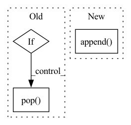

Pattern ID :19918
Before Change
if iteration is None:
iteration = self._count
if len(self._data) == self._max_length:
self._data.pop( 0)
self._data.append((value, iteration))
self._count += 1
self._global_avg += (value - self._global_avg) / self._countAfter Change
elif len(self._data[key]) == self._max_size:
self._data[key].pop(0)
self._data[key].append( value)
def count(self, key):
Return the number of values according to the key.In pattern: SUPERPATTERN
Frequency: 3
Non-data size: 3
Instances Fragment ID: 64770302
Project Name: yeliudev/nncore
Commit Name: 37679e2ae736e55218a505c486bea6ae404031f8
Time: 2020-03-18
Author: goolhanrry@gmail.com
File Name: nncore/engine/buffer.py
M Class Name: Buffer
N Class Name: Buffer
M Method Name: update(3)
N Method Name: update(3)
M Parent Class: object
N Parent Class: object
M File Name: nncore/engine/buffer.py
N File Name: nncore/engine/buffer.py
M Start Line: 24
M End Line: 37
N Start Line: 42
N End Line: 56
Before Change
edge_type_idx = random.randint(0, len(remaining_edge_types)-1)
new_edge_type = remaining_edge_types[edge_type_idx]
new_edge_type_tuple = EdgeTypeStr2Tuple(new_edge_type)
if len(set(new_edge_type_tuple) & explored_node_type_set) == 0:
continue
chosen_edge_types_list.append(new_edge_type)
explored_node_type_set |= set(new_edge_type_tuple)
remaining_edge_types.pop( edge_type_idx)
break
return tuple(sorted(chosen_edge_types_list))
After Change
et_tuple = EdgeTypeStr2Tuple(et)
if len(set(et_tuple) & explored_node_type_set) > 0:
candidate_edge_types_list.append(et)
idx_to_rm.append( idx)
// Since pop() will change the index of following elements,
// we need to reverse the order of idx_to_rm.
for idx in reversed(idx_to_rm):
other_edge_types_list.pop(idx) Fragment ID: 64770314
Project Name: pku-dair/sgl
Commit Name: 93e7aac75c7a5fe5266c08615e4e5c0de463a86d
Time: 2022-04-21
Author: 82886739+ZhenbangYou@users.noreply.github.com
File Name: dataset/choose_edge_type.py
M Class Name: AnonimousClass
N Class Name: AnonimousClass
M Method Name: ChooseEdgeType(3)
N Method Name: ChooseEdgeType(3)
M Parent Class:
N Parent Class:
M File Name: dataset/choose_edge_type.py
N File Name: dataset/choose_edge_type.py
M Start Line: 29
M End Line: 56
N Start Line: 31
N End Line: 62
Before Change
j += 1
output.append(d.get("add_prefix_space", "") + self.tokenizer.convert_tokens_to_string(generated_template[i:j]))
i = j + 1
elif d.pop( "add_prefix_space")
output.append(prefix + json.dumps(d))
return "".join(output)
After Change
d_new = {}
d_new["mask"] = None
d_new["add_prefix_space"] = d["add_prefix_space"]
output.append( d_new)
else:
output.append(d)
return output
Fragment ID: 64770309
Project Name: thunlp/openprompt
Commit Name: 81705392bda249548dcd4ecf0086c6fae63b6d59
Time: 2023-02-05
Author: yl-chen21@mails.tsinghua.edu.cn
File Name: openprompt/prompts/prompt_generator.py
M Class Name: TemplateGenerator
N Class Name: TemplateGenerator
M Method Name: convert_template(3)
N Method Name: convert_template(3)
M Parent Class:
N Parent Class:
M File Name: openprompt/prompts/prompt_generator.py
N File Name: openprompt/prompts/prompt_generator.py
M Start Line: 139
M End Line: 157
N Start Line: 139
N End Line: 159